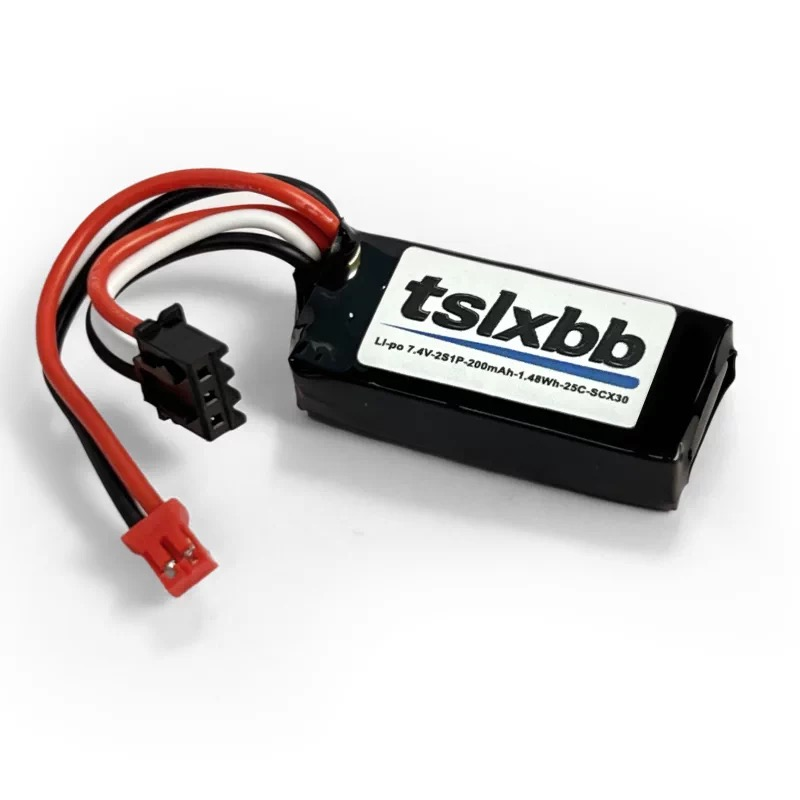
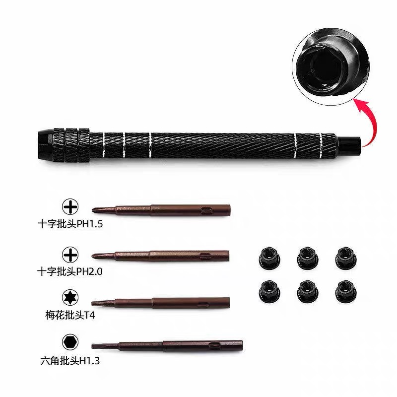

SCX30 保養與常見問題：電池、避震、連桿車友踩過的雷
整理 SCX30 車友最常遇到的問題：USB 充電器與低電壓保護讓電池過放、迷你避震要不要加油、Flex 板好不好用、螺絲滑牙與零件刮傷怎麼避免。
這篇整理論壇和社團裡 SCX30 車友最常問、也最常踩到的雷。
電池：別每次都跑到斷電才充
有車友一直用原廠 USB 充電器，每次都跑到低電壓保護斷電才充。後來用正式的平衡充電器一量，發現電池已經過放到危險的程度。也有車友實測 USB 充電器會稍微過充，並懷疑電變的低電壓保護設得太低。
- 感覺車子變慢就停，不要每次都跑到斷電
- 有機會的話，用平衡充電器檢查一下電池電壓
- 電池鼓起來就不要再用
- 準備兩顆電池輪流用，比較不會想「把最後一點電跑完」

2S 7.4V 200mAh 鋰電池OP｜SCX30｜電裝系統/舵機NT$ 250看商品避震：迷你避震要不要加油？
這是論壇上的老話題。一派認為在這個尺寸和速度下，油壓阻尼的效果很小，而且黏度合適的油很難找、也很難留在避震筒裡；另一派認為加油可以稍微修正彈簧太彈的問題。
比較一致的共識是：
- 原廠避震偏「彈」，換軟一點的彈簧通常就有改善
- 避震桿卡卡的，滴一滴縫紉機油或槍油，讓活塞桿不會卡住就好
- 用黃油也可以，但會慢慢滲出來，要定期補
想要可調、油壓的版本，可以換鋁合金避震：
 26mm 鋁合金油壓避震器INJORA｜SCX30｜避震懸吊NT$ 540看商品
26mm 鋁合金油壓避震器INJORA｜SCX30｜避震懸吊NT$ 540看商品
Flex 板（彈片懸吊）好用嗎？
Flex 板拍照很好看，懸吊行程也很驚人，可能需要修剪車殼。但有車友提醒，實際攀爬時它會讓車子頭重腳輕、晃來晃去，對爬石頭不一定有幫助。效果很看調校，想嘗試的人要有反覆調整的心理準備。
螺絲滑牙、零件刮傷
- 小車螺絲很細，起子要用尺寸剛好的，不要用太大力
- 原廠螺絲容易滑牙，可以換成合金鋼螺絲
- 有車友安裝金屬輪框時被塑膠套筒刮傷表面，鋁件、塗層件安裝時可以先包一層布或膠帶
 12.9 級合金鋼螺絲組INJORA｜SCX30｜工具與耗材五金NT$ 240看商品
12.9 級合金鋼螺絲組INJORA｜SCX30｜工具與耗材五金NT$ 240看商品

簡易起子組（附 6 顆輪框螺母）OP｜SCX30｜工具與耗材五金NT$ 150看商品每次跑完的 3 分鐘檢查
- 輪框螺母有沒有鬆
- 轉向連桿和底盤連桿有沒有彎
- 傳動軸兩端有沒有脫出
- 電池電壓，充到儲存電壓再收起來
- 車底的沙子、草屑清一清，特別是波箱和轉向附近
本文整理自 RCTalk 論壇「SCX30 Tips, Tricks, and Mods」討論串與車友分享，電池安全請以原廠說明為準。
到山稜RC選物看更多零件